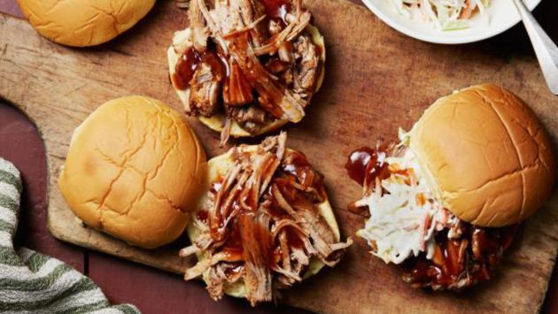

Pulled Pork

Description
Enjoy some country spun cookin with this Pulled Pork recipe.
Ingredients
- 1 onion, thinly sliced
- 4 and a half pounds bone-in pork loin end roast
- Salt and ground black pepper to taste
- 3 quarter cups of cider vinegar
- A quarter cup of water
- 1 and a half 18 ounce bottle of hickory brown sugar barbeque sauce
- 3 tablespoons of brown sugar, or to taste
Steps
- Arrange onion slices in the bottom of a slow cooker. Season pork with salt and pepper and place over onion. Add vinegar and water.
- Cook pork on Low for 8 hours. Transfer pork to a platter and shred with two forks. Remove and discard about half the pork juices from slow cooker and stir in shredded pork, barbeque sauce, and brown sugar.
Return home